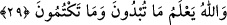
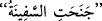

tanımadıkları için bana ve arkadaşlarıma dil uzattılar. Bu âyetin hükmünün ne kadar
mühim ve yerinde olduğunu o zaman fark ettim.”
“Eğer size, “geri dönün!” gidin “denilirse, hemen dönün.” İnsanların kapısında
bekleyip durmayın. Yâni ister izne yetkili olsun, ister olmasın, ev halkından biri size
dönüp gitmenizi söylerse hemen dönüp gidin. Kapıda beklemek sûretiyle izin almak için
ısrar etmeyin. Çünkü böyle bir davranış insanları hoşnudsuz eder, şahsiyeti de zedeler.
“Çünkü bu,” yâni dönüp gitmek densizlik ve rezillik demek olan ısrarla ve inadla
kapılarda beklemekten “sizin için daha nezih bir davranıştır.”
“Allah, yaptığınızı bilir.” Allah, sorumlu olduğunuz şeylerden hangilerini yaptığınızı
ve hangilerini terk ettiğinizi çok iyi bilir ve ona göre de size karşılık verir.
et-Te’vîlâtü’n-Necmiyye’de bu âyetin işârî tefsiri şöyle yapılmıştır: “Orada hiçbir
kimse bulamadınızsa” ifâdesi, evin sâhibinin fenâsına işâret eder ki o, insanlığın
varlığıdır. Emrolunduğu gibi istikâmet üzere olmak için Allah’ın emri ile orada
tasarrufta bulunma konusunda “size izin verilinceye kadar” varlığı mûcib olan tabîatın
tasarrufu ile “oraya girmeyin. Eğer size,” Rabbinize “Geri dönün!” denilirse, hemen
dönün.” İnsânî varlıkta huzûra ermiş kimseler gibi tasarrufta bulunmayın. “Çünkü bu,
sizin” insanlık fitnelerinden bir fitneye düşmemeniz ve kendinizle değil, Allah ile
beraber olmanız “için daha nezih bir davranıştır.” Allah’a dönüş ve cesed evleri ile
ilgili alâkaları terk konusunda “Allah, yaptıklarınızı” onların sizin için daha hayırlı
olduğunu “bilir.”
29. İçinde kendinize âid eşyânın bulunduğu oturulmayan evlere girmenizde
herhangi bir sakınca yoktur. Allah sizin açığa vurduklarınızı da, gizlediklerinizi de
bilir.
İzin istemeden “İçinde kendinize âid eşyânın bulunduğu oturulmayan evlere” yâni
sadece belli bir topluluğun kalması için yapılmamış, bilakis sürekli kalma yeri
edinmemek şartıyla ihtiyacı olan herkesin istifâdesine sunulmuş ribatlar, hanlar,
dükkânlar ve hamamlar gibi yerlere “girmenizde herhangi bir sakınca yoktur.” Çünkü
bu yerler bütün insanların faydalanması için hazırlanmıştır. “İçinde kendinize âid
eşyânın bulunduğu” ifâdesi bunu haber vermektedir. Bu ifâde “evler”in sıfatıdır.
Girilen evlerin durumuna göre sıcak ve soğuktan korunmak, yük ve eşyâ koymak,
alışveriş yapmak, yıkanmak ve benzeri gibi sizin faydalanma ve istifâde etme hakkınız
bulunan yerlere demektir. Buralara girmek için ribat ve hanlardaki hizmetçilerden,
dükkân sâhiplerinden, hamam idârecilerinden izin almaya gerek yoktur.
el-Müfredât’ta der ki:
Gemi iki tarafından birine meyletti, demektir.